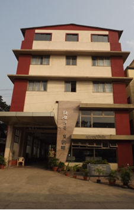
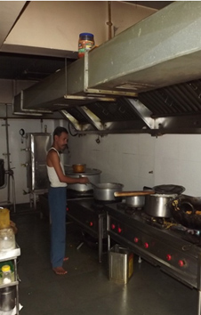
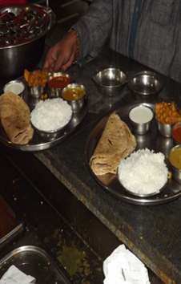

Annapurna Canteen.
About 25% of the sanstha employees organize cleaning, cooking and serving wholesome meals to visiting devotees. The times and current rates are as follows:-
Nasta - 6 a.m. to 9 p.m for Rs. 20
Meals -11 a.m. to 9 p.m for Rs. 40
Sadhu coupons Rs. 20
A new Annapurna has been constructed keeping in mind the facilities for devotees coming to Ganeshpuri from all around the world. It has a well equipped modern kitchen and can support and produce food for one thousand people per hour.
There are thirty Air conditioned rooms (AC) and fifty non air condition rooms (NAC) built for devotees visiting Ganeshpuri.
Note: From 2009 to 2011 only 100 lunch/ Dinner thalis and 150 Nashta Thali were served per day. With the dedicated efforts of the Trustees, the number of Lunch/ Dinner Thalis increased to 700 thalis and Nastha thali to 900 thalis per day.
The turnover increase was Rs. 12,77,500 to Rs. 32,85,000.
The Annapurna is open for the devotees from 6 a.m. to 10 p.m. everyday.
|  |  |  |
| New Annapurna | Well Equipped Kitchen | Prasad |
Balbhojan.
Bhagwan Nityanand loved to play amongst the children and feed them. Balbhojan was very dear to Bhagwan. This is one of the main activity of the Sanstha. Hundreds of local children from and around Ganeshpuri are given free wholesome food everyday. The children joyfully chant OM NAMO BHAGWATE NITYANANDAYA as soon as they enter the Hall, sit down, are served and all start eating together. A large number of Bhandaras are also organized here after the children have had their meal. Balbhojan is to north of Kailash Niwas.